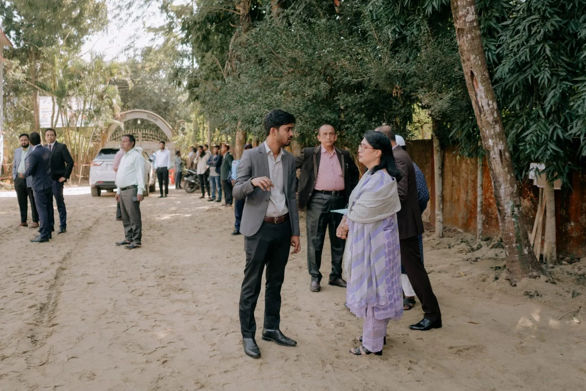
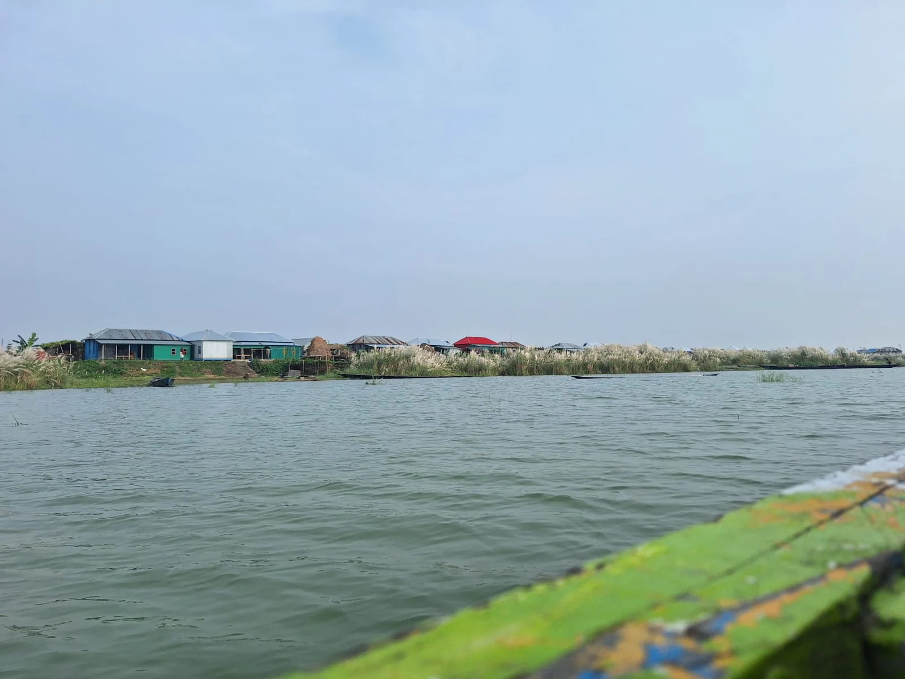
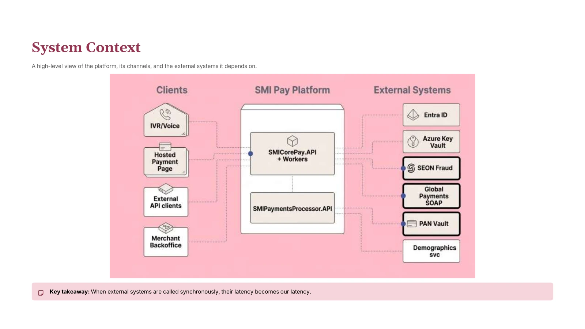

Research & Intelligence
Market research, competitor analysis, literature review, policy research, segmentation, business profiling and evidence synthesis.
Market researchPolicyLiteratureCompetitive intelligence
NAZMUS SAKIB
Researcher, analyst and consultant working across sustainability, business, data and policy.
Currently at Mutual Trust Bank PLC. Previously with NRBC Bank and ICCCAD, alongside 300+ independent consulting projects.
Seven flagship examples across social impact, policy, climate, data and consulting. The full archive carries the rest.

Ongoing work across project appraisal, governance documentation, partner coordination, field delivery, monitoring and impact reporting.
Explore my ongoing work ↗
From organizing a regional policy dialogue in Colombo to working-session participation, research synthesis and the co-authored ICCCAD article Carving the Skeleton.
Read case study ↗
Vulnerability assessment, locally led adaptation, training, planning and knowledge products for climate-affected communities.
Read case study ↗
Questionnaire development, Kobo household surveys, mixed methods and research communication on what happens when climate stress forces people to move.
Read case study ↗Six regional source files shaped into a usable school contact dataset, with city-level and multi-region sample extracts.
Read case study ↗
Two Power BI projects across US regional sales and accident-weather analysis. Data cleaning, integration, KPI design and visual interpretation.
Explore both projects ↗
Architecture research, workflow analysis and technical storytelling. A 28-slide narrative connecting a payment timeout to a proposed asynchronous redesign.
Explore the architecture story ↗Also in the archive: college/university data QA, scientific data curation, business analytics, academic research support and training-manual development.
Open the full work archive ↗The subject changes. The working method does not: establish the question, verify the evidence, structure the output, make it useful.
Market research, competitor analysis, literature review, policy research, segmentation, business profiling and evidence synthesis.
Data mining, scraping, QA, enrichment, Power BI analysis, Python workflows and reusable research tooling.
Climate adaptation, locally led planning, climate and sustainable finance, CSR monitoring, field evidence and stakeholder coordination.
Technical decks, management notes, policy writing, reports, training manuals, editorial work and decision-ready presentations.
Formal roles and independent practice are shown separately because both matter — and they prove different things.
CSR project planning, implementation monitoring, MIS and KPI tracking, payment documentation, stakeholder coordination and Bangladesh Bank reporting support.
Corporate communication, NRBC Planet editorial work, internal documentation, training coordination and contribution to the bank's Training Policy.
Climate displacement, locally led adaptation, vulnerability assessment, training, research products, workshops and regional policy dialogue.
300+ engagements spanning research, data mining, competitor and pricing analysis, reporting, scraping, dashboards, technical communication and digital execution.
Selected published and research work across climate, displacement, urban nature-based solutions and locally led adaptation.
My background in journalism taught me to ask, verify and explain. Development research added field methods, climate adaptation and community work. Banking brought governance, documentation, monitoring and institutional decision-making into the picture.
Independent consulting connected those pieces to business problems: markets, datasets, dashboards, automation, research operations and technical communication. The through-line is less about an industry and more about how I work — follow the evidence until the next useful action becomes clear.